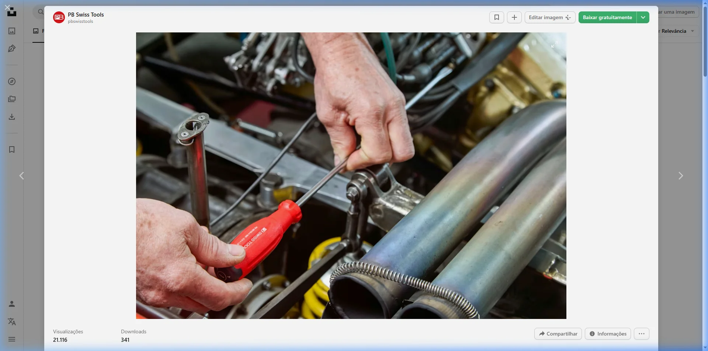

Tabela de manutenção de carro: quanto você vai gastar por ano

Ter um carro envolve uma série de custos que vão muito além do combustível. E se você quer realmente entender o impacto no seu bolso, precisa olhar para o todo, principalmente o custo de manutenção de carro por ano.
A melhor forma de visualizar isso é com uma tabela clara, que mostra quanto você pode gastar ao longo de 12 meses.
Ao entender o custo médio manutenção carro, fica muito mais fácil se planejar, evitar surpresas e tomar decisões mais inteligentes.
Custo de manutenção de carro por ano: visão geral
Antes da tabela, vale entender uma média realista no Brasil:
- Carros populares: R$ 1.500 a R$ 3.000/ano
- Carros intermediários: R$ 3.000 a R$ 6.000/ano
- SUVs e carros maiores: R$ 5.000 a R$ 10.000+/ano
Esses valores representam o custo médio manutenção carro considerando uso normal.
Tabela de manutenção anual (valores médios)
Abaixo está uma simulação prática do custo de manutenção de carro por ano para um carro popular:
| Tipo de manutenção | Frequência no ano | Custo médio | Total anual |
|---|---|---|---|
| Troca de óleo | 2 a 3 vezes | R$ 200 | R$ 400 a R$ 600 |
| Filtros | 1 a 2 vezes | R$ 100 | R$ 100 a R$ 200 |
| Pastilhas de freio | 1 vez | R$ 300 | R$ 300 |
| Pneus (proporcional) | 1 vez a cada 2 anos | R$ 800 | R$ 400 |
| Alinhamento/balanceamento | 2 vezes | R$ 100 | R$ 200 |
| Revisões gerais | 1 a 2 vezes | R$ 250 | R$ 250 a R$ 500 |
Total estimado
R$ 1.650 a R$ 2.200 por ano
Esse valor representa um cenário comum dentro do custo médio manutenção carro.
Quanto custa manter um carro por mês
Transformando o custo de manutenção de carro por ano em valor mensal:
- R$ 1.800 por ano: cerca de R$ 150 por mês
- R$ 3.000 por ano: cerca de R$ 250 por mês
Isso ajuda a incluir a manutenção no seu planejamento financeiro.
Como o tipo de carro muda o custo
O custo médio manutenção carro varia bastante conforme o veículo.
Carro popular
- Peças mais baratas
- Manutenção simples
- Menor custo anual
Carro intermediário
- Peças mais caras
- Manutenção mais complexa
- Custo moderado
SUV ou carro premium
- Peças mais caras
- Maior consumo de peças
- Custo elevado
Nesse caso, o custo de manutenção de carro por ano pode facilmente ultrapassar R$ 5.000.
Custos inesperados: o que a tabela não mostra
Mesmo com uma boa estimativa, existem imprevistos.
Exemplos
- Problemas mecânicos
- Troca de bateria
- Reparos elétricos
- Suspensão
Esses custos não aparecem sempre, mas fazem parte da realidade.
Por isso, o ideal é sempre ter uma margem além do custo médio manutenção carro.
Como reduzir o custo de manutenção
Embora inevitável, o custo de manutenção de carro por ano pode ser controlado.
Dicas práticas
Faça manutenção preventiva
Evita problemas maiores.
Não ignore sinais do carro
Barulhos e falhas indicam problemas.
Use peças de qualidade
Evita retrabalho.
Dirija com cuidado
Menos desgaste ao longo do tempo.
Vale a pena acompanhar esses custos?
Sim, e isso muda totalmente sua relação com o carro.
Quando você entende o custo médio manutenção carro, consegue:
- Planejar melhor o orçamento
- Evitar surpresas
- Decidir melhor na compra de um veículo
Muita gente só percebe o impacto depois que os gastos começam a aparecer.
Conclusão
O custo de manutenção de carro por ano é um dos principais fatores no custo total de ter um veículo.
Com uma tabela simples e uma estimativa realista, você passa a ter controle e evita sustos no orçamento.
Ao entender o custo médio manutenção carro, fica claro que manter um carro exige planejamento.
No fim, não é só sobre comprar o carro, é sobre conseguir manter ele rodando sem comprometer suas finanças.
Para simular o seu cenário em segundos, use também a calculadora de manutenção anual do carro.